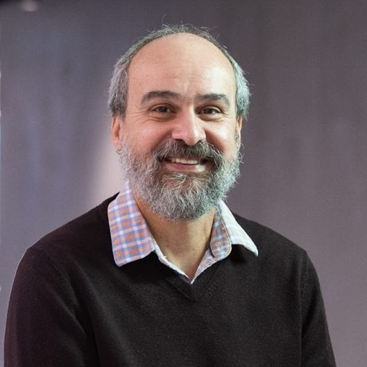

I have been in academia since 1996 and am currently in semi-retirement mode. That is, while I do not hold a full-time (paid) position, I continue to collaborate with (and visit) colleagues, and I am also open to work as a consultant.
In academia, publications matter a lot. For most of my academic life, my main research interests have been related to spatiotemporal data management. According to Google Scholar, my 100+ publications have been cited over 5,200 times as of Dec./2025, yielding an h-index of 35. DBLP kindly maintains (most of) my publications organized by year here.
Regarding academic positions I am currently a Professor Emeritus at the University of Alberta's Department of Computing Science and an Adjunct Professor at the University of Victoria's Department of Computer Sciences. I have also served as (from most to least recent):
Over the years, e.g., during sabbatical leaves, I have also been a visiting professor at LMU’s Institute for Informatics in Germany, at the Department of Computer Science at the Federal University of Ceara in Brazil.National University of Singapore’s School of Computing, and at the Aalborg University’s Department of Computer Science in Denmark.
In terms of academic service I have served often as PC member for database conferences, such as ACM SIGMOD, VLDB and ICDE, and helped organize, in different capacities, several other conferences and workshops. More recently I was pleased and honoured to serve as Program co-Chair for ACM SIGSPATIAL in 2022 and 2023 and as its General co-Chair in 2024.